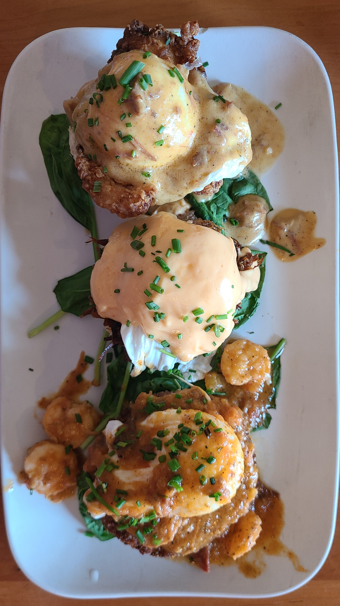
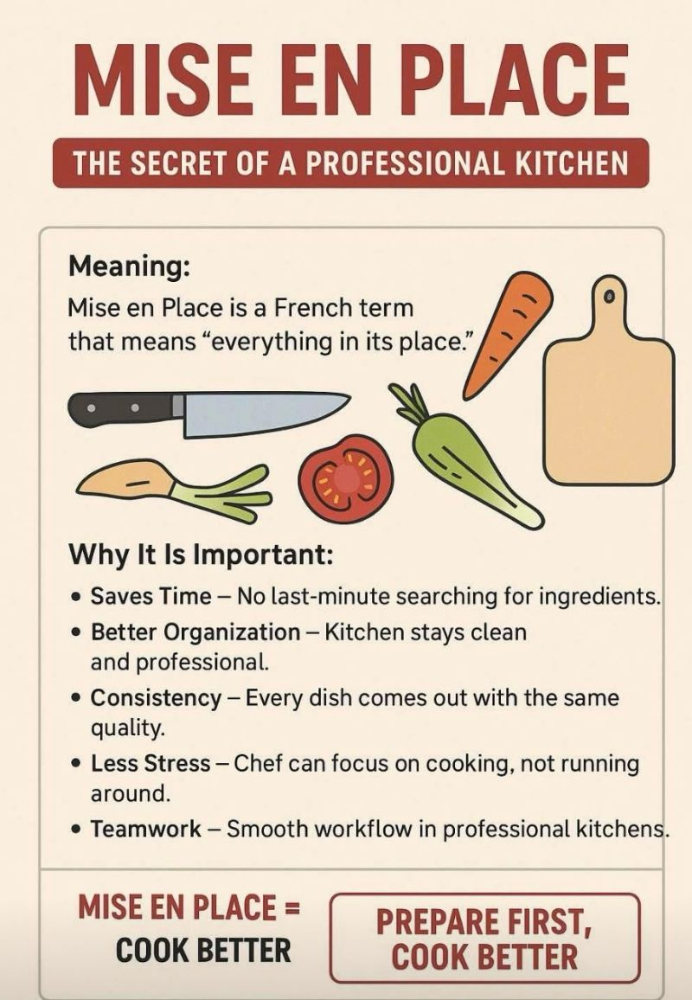

Picture of 3 different kinds of Eggs Benedict from Ruby Sunshine
About the Sauce
As I briefly mentioned on the last page, Hollandaise Sauce is one of the 5 Mother Sauces taught in modern French cuisine. Despite its name translating to "from Holland", it is said that the sauce comes from the French region of Normandy. It's hard to pin-point exactly why it was given this name, but various sources point to displacement of French Protestants during the Franco-Dutch War (1672-1678). Many of these people (known as Huguenots) fleed to Holland to escape religious persecution.
Today, Hollandaise is known for its rich, creamy, and buttery taste. Its base recipe consists of butter, egg yolks, lemon juice, and pepper. Many recipes over the years have added/adjusted ingredients to fit personal tastes, but those four remain the basis of its signature flavor. The sauce is considered an "emulsification". An emulsification is the suspension of one liquid in another, in this case, the suspension of melted butter and lemon juice.An Elmusification requires an Emulsifier to bind the liquids together; the emulsifier here is the egg yolks. The lemon juice also works as a stabilizer to prevent the egg yolks from curdling in the heat.
While seemingly simple just looking at a recipe, it is famously easily to mess up at any part of the process. If the temperature is too hot, the eggs will scramble. If not hot enough, the mixture won't thicken. Add in the oil too fast, the sauce wont emulsify. Fail to keep it held at the right temperature once it is finished, the sauce will break. So many things can go wrong in this recipe, but once you perfect it, it is easily one of the best sauces to serve on a plate.
Today, we will be (mostly) following a recipe posted by some students at The Culinary Institute of America. They have kindly added two important tips to keep in mind while following the recipe:
- The harder you whisk the egg yolks, the thicker your sauce will be. This is something you can adjust to your own personal taste.
- DO NOT exceed 130 Degrees Fahrenheit (or 54.4 Degrees Celcius for you weirdos)
Equipment aka "Mise en Place"
"Mise en Place" is a term used in kitchens that means "Everything in its place". This is an important concept to keep in mind for any recipe that you are following. Make sure that you have all the equipment needed, ingredients washed/cut/prepped, and your recipe in front of you before any cooking is begun.

Image from: K C Sharad Poovanna
Equipment List:
- Sauce Pot
- Heat-safe bowl that fits the top of the pot without falling in. (I recommend using a stainless steel bowl, but a glass bowl works too)
- Whisk
- Thick Towel or Potholders
Ingredients:
- 3 large egg yolks
- 1.5 stick unsalted butter, just melted. Keep it hot for this recipe. I recommend keeping this in a container with a handle and a pour spout. (You will understand why when we get there)
- 1 Tablespoon of fresh lemon juice
- 1 teaspoon of Dijon Mustard
- 1 teaspoon Worcestershire Sauce (say Worcestershire 5 times fast)
- 1 pinch of Aleppo or Cayenne Peppper
- (opt) 1/4 cup unoaked Chardonnay or Pinot Grigio
- 1 pinch of Salt
If you don't get it right the first time, don't give up. It takes a few tries before getting the sauce down pat. Look up different methods to see what makes the most sense to you. Thanks for reading!
Sources Referenced: